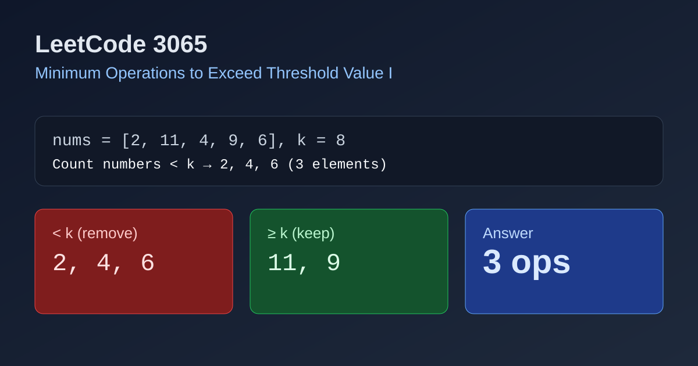

LeetCode 3065: Minimum Operations to Exceed Threshold Value I (Count Values Below k)
LeetCode 3065ArrayCountingToday we solve LeetCode 3065 - Minimum Operations to Exceed Threshold Value I.
Source: https://leetcode.com/problems/minimum-operations-to-exceed-threshold-value-i/

English
Problem Summary
Given an integer array nums and an integer k, in one operation you can remove one element from nums. Return the minimum number of operations needed so that every remaining element is greater than or equal to k.
Key Insight
Elements already >= k are valid and never need removal. Every element < k must be removed, and each removal handles exactly one such element. So the answer is exactly the count of values below k.
Algorithm
- Initialize ans = 0.
- Scan each number x in nums.
- If x < k, increment ans.
- Return ans.
Complexity Analysis
Let n be the length of nums.
Time: O(n).
Space: O(1).
Common Pitfalls
- Using <= k by mistake; values equal to k are already valid.
- Overcomplicating with sorting or heaps; this problem only needs counting.
- Modifying the array unnecessarily when only the minimum operation count is required.
Reference Implementations (Java / Go / C++ / Python / JavaScript)
class Solution {
public int minOperations(int[] nums, int k) {
int ans = 0;
for (int x : nums) {
if (x < k) ans++;
}
return ans;
}
}func minOperations(nums []int, k int) int {
ans := 0
for _, x := range nums {
if x < k {
ans++
}
}
return ans
}class Solution {
public:
int minOperations(vector<int>& nums, int k) {
int ans = 0;
for (int x : nums) {
if (x < k) ans++;
}
return ans;
}
};class Solution:
def minOperations(self, nums: List[int], k: int) -> int:
ans = 0
for x in nums:
if x < k:
ans += 1
return ansvar minOperations = function(nums, k) {
let ans = 0;
for (const x of nums) {
if (x < k) ans++;
}
return ans;
};中文
题目概述
给定整数数组 nums 和整数 k。一次操作可以从数组中删除一个元素。要求返回最少操作次数，使得剩余元素都满足 >= k。
核心思路
所有 >= k 的元素天然合法，不需要删除；所有 < k 的元素最终都必须删掉。每次操作只能删一个，所以答案就是 < k 元素的数量。
算法步骤
- 初始化计数器 ans = 0。
- 遍历数组每个元素 x。
- 若 x < k，则 ans++。
- 返回 ans。
复杂度分析
设数组长度为 n。
时间复杂度：O(n)。
空间复杂度：O(1)。
常见陷阱
- 把条件误写成 <= k，会错误删除等于 k 的元素。
- 使用排序、堆等复杂结构，导致不必要的开销。
- 题目只要最小操作次数，不需要真的构造删除后的数组。
多语言参考实现（Java / Go / C++ / Python / JavaScript）
class Solution {
public int minOperations(int[] nums, int k) {
int ans = 0;
for (int x : nums) {
if (x < k) ans++;
}
return ans;
}
}func minOperations(nums []int, k int) int {
ans := 0
for _, x := range nums {
if x < k {
ans++
}
}
return ans
}class Solution {
public:
int minOperations(vector<int>& nums, int k) {
int ans = 0;
for (int x : nums) {
if (x < k) ans++;
}
return ans;
}
};class Solution:
def minOperations(self, nums: List[int], k: int) -> int:
ans = 0
for x in nums:
if x < k:
ans += 1
return ansvar minOperations = function(nums, k) {
let ans = 0;
for (const x of nums) {
if (x < k) ans++;
}
return ans;
};
Comments